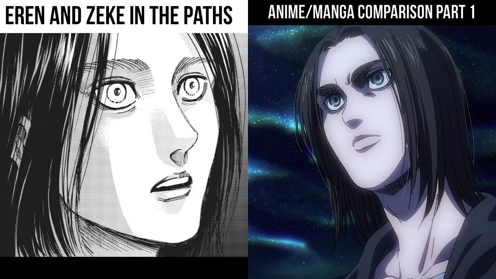
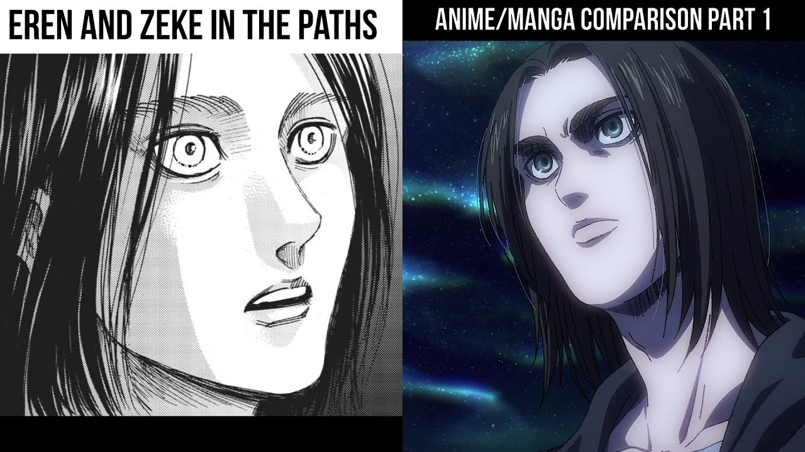
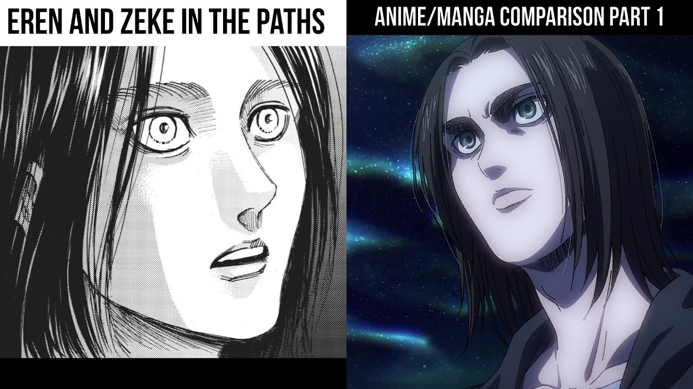

In year 845, after Eren and Carla have a discussion about Eren's wish to
join the Survey Corps, Grisha promises him to show him an important secret
he is hiding in the basement, and then leaves to work. A still upset Eren
flees from the house and Carla sends Mikasa after him. But while the three
are away from home, the Colossus and Armored Titans breach the Wall on
Shiganshina and a flood of Titans invades the district. One of the debris
that flies out of the Wall due to the Colossus Titan's kick falls on the
Yeagers' house, destroying it and crushing Carla's legs. Despite Eren and
Mikasa's attempts to rescue her, Hannes drags them from there when the
Smiling Titan approaches. The kids then impotently witness as a helpless
Carla is murdered and eaten by the Titan.[17]
Later on that night, Grisha hears the news of the fall of Shiganshina and,
enraged at the Reiss family due to their refusal to free humanity from the
Titans despite possessing the power to do it, goes to the Reiss Chapel and
faces the then holder of the Coordinate, Frieda Reiss. The two of them
transform into Titans and fight, but Grisha defeats Frieda and eats her,
murdering her and stealing the Coordinate. He then proceeds to slaughter
the whole family, with the exception of Rod, who barely manages to escape,
and Historia, who was living on a farm by then.[18][19] Grisha then goes to the shelter where
Eren and Mikasa are staying as refugees and learns from Eren that Carla
has died.[20] Grisha takes Eren into the forest and, as he gives him the
key to the basement and instructs him to find it, by all means[21], he
injects Eren with a Titan serum, triggering a transformation into a Pure
Titan by Eren. The now mindless Eren grabs Grisha and bites him in half,
inheriting his Titan transformation and Coordinate powers. After regaining
his human form, Eren finds the remains of his father next to him and
passes out in shock.[22] He is later found by Keith Shadis, who takes him
back to the shelter.[23]

Eren later wakes up with no memory of that event as a side effect of the
Titan serum,[24][21] but he still retained the key and after that day he
always wore it around his neck.[25] The two kids and their best friend
Armin Arlert apparently live alone for the next two years and helped in
the fields.[26] In year 847 they enlist in the 104th Training
Corps[27][28] and three years later, the three graduate and join the
Survey Corps.
Return to Shiganshina arc During the Battle of Shiganshina District, Eren
crosses paths with Zeke, who recognizes and promises to save Eren after
claiming they are both victims of Grisha.[29] Eren, Mikasa, Levi, and
Hange later go to the Yeager basement and find three books hidden in the
false bottom of a drawer. The first contains a photograph of Grisha Yeager
with a woman and a little kid, revealing he came from beyond the
Walls.[30] The books tell Grisha's story, beginning with the day his
sister Faye was killed off.[31]
Marley arc
After the Marley Mid-East War, Zeke reunites with his grandparents who
praise him for carrying out his mission successfully.[32] During Eren's
infiltration into Marley in the year 854, he meets with his half-brother
Zeke in a hospital. Together, they discuss Eren's inheritance of their
father's memories, and Grisha's slaughter of the Reiss family. Eren claims
to disagree with his father's approach, stating that Eldians would not
have to suffer if they had not been born. With this, Eren agrees to Zeke's
euthanasia plan and takes a baseball as a token of their agreement.[33]
Eren also meets his grandfather in the hospital whilst under the guise of
being an amnesiac war-veteran named "Kruger." They have a conversation
about the Grice family, and Yeager asks Kruger to stop using Falco Grice
for favors that could damage his family's reputation. He also tells Kruger
to return to his family as soon as he is healthy. Eren notes Yeager seems
to have regrets surrounding his own family; he is solemnly told that the
man regrets the fates his children met every day. Blaming himself because
of the methods he used to raise his son, the elder Yeager suffers a mental
breakdown and is soon taken away.[34] A few days later at Willy Tybur's
speech, Eren Yeager has his name disgraced when he is declared to the
world as the enemy of peace.[35] In the resulting conflict, Eren inherits
the War Hammer Titan, bringing a fourth Titan power into the possession of
the Yeager family.[36]
War for Paradis arc
Following Marley's revenge for Liberio by invading Shiganshina, Zeke
reunites with Eren to help him fend off his attackers[37] and when Eren
ends up getting decapitated by Gabi Braun,[38] Zeke makes contact with him
and the two brothers are transported to the Coordinate.[39] Eren shocks
Zeke by revealing that he had only pretended to go along with Zeke's plan
so that he could enter the Coordinate.[40] Though disheartened, Zeke
blames it on Grisha brainwashing Eren and resolves to save Eren by forcing
him to witness their father's memories. Contrary to Zeke's expectations,
he discovers that Grisha was willing to set aside his mission to retake
the Founder in favor of staying with his family, and learns that Grisha
never stopped thinking about him.[41] Zeke comes to accept that Eren has
never been manipulated by their father. However, Eren sends his father
memories of the fall of Wall Maria through the Attack Titan, prompting his
visit to the Reiss family the night the Wall falls. Though his father
hesitates at the idea of killing the entire family, Eren goads him into
doing it, reminding Grisha of everyone who has died to get him this far.
Zeke becomes disillusioned with Eren and commands Ymir Fritz to remove the
ability for all Subjects of Ymir to reproduce.[42] Eren forcefully breaks
free of the shackles Zeke restrained him with and grabs Ymir, telling her
that she does not have to be a slave and obey Zeke's orders. She has the
ability to choose. He believes she is the one who led him here, and that
she has been waiting for 2,000 years. Ymir hears Eren and lifts her head
in tears. Back in the real world, a centipede-like substance connects
Eren's decapitated head with his body, initiating the Rumbling.[43] Using
the power of the Founding Titan, Eren announces his intention to kill
everyone in the outside world in order to protect the people of
Paradis.[44] A truce is made between the surviving Warriors and remnants
of the Survey Corps to stop the Rumbling.[45] The assembled group pursues
Eren to Fort Salta where they try to locate Zeke atop Eren's enormous
skeletal Founding Titan form, knowing Zeke's royal blood is enabling the
marching Wall Titans.[46] Ymir creates numerous puppet Titans to defend
Eren and when one of them captures Armin in its mouth,[47] he meets Zeke
in Paths.[48] Zeke tells Armin that Eren understood Ymir when he could
not, and Armin manages to convince him to help them stop Eren. Zeke
partially emerges from one of the Founding Titan's spines and calls out to
Levi, who immediately decapitates him, stopping the Rumbling.[49] After
Eren's skeletal Founding Titan is exploded by Armin transforming on top of
it, Eren survives and transforms into a different Titan form, skinless and
as tall as Armin's Titan. With Armin and Levi's help, Mikasa discovers
Eren's location and enters his Titan's mouth, severing Eren's head from
the spine.[50]
 Later on that night, Grisha hears the news of the fall of Shiganshina and,
enraged at the Reiss family due to their refusal to free humanity from the
Titans despite possessing the power to do it, goes to the Reiss Chapel and
faces the then holder of the Coordinate, Frieda Reiss. The two of them
transform into Titans and fight, but Grisha defeats Frieda and eats her,
murdering her and stealing the Coordinate. He then proceeds to slaughter
the whole family, with the exception of Rod, who barely manages to escape,
and Historia, who was living on a farm by then.[18][19] Grisha then goes to the shelter where
Eren and Mikasa are staying as refugees and learns from Eren that Carla
has died.[20] Grisha takes Eren into the forest and, as he gives him the
key to the basement and instructs him to find it, by all means[21], he
injects Eren with a Titan serum, triggering a transformation into a Pure
Titan by Eren. The now mindless Eren grabs Grisha and bites him in half,
inheriting his Titan transformation and Coordinate powers. After regaining
his human form, Eren finds the remains of his father next to him and
passes out in shock.[22] He is later found by Keith Shadis, who takes him
back to the shelter.[23]

Eren later wakes up with no memory of that event as a side effect of the
Titan serum,[24][21] but he still retained the key and after that day he
always wore it around his neck.[25] The two kids and their best friend
Armin Arlert apparently live alone for the next two years and helped in
the fields.[26] In year 847 they enlist in the 104th Training
Corps[27][28] and three years later, the three graduate and join the
Survey Corps.
Return to Shiganshina arc During the Battle of Shiganshina District, Eren
crosses paths with Zeke, who recognizes and promises to save Eren after
claiming they are both victims of Grisha.[29] Eren, Mikasa, Levi, and
Hange later go to the Yeager basement and find three books hidden in the
false bottom of a drawer. The first contains a photograph of Grisha Yeager
with a woman and a little kid, revealing he came from beyond the
Walls.[30] The books tell Grisha's story, beginning with the day his
sister Faye was killed off.[31]
Later on that night, Grisha hears the news of the fall of Shiganshina and,
enraged at the Reiss family due to their refusal to free humanity from the
Titans despite possessing the power to do it, goes to the Reiss Chapel and
faces the then holder of the Coordinate, Frieda Reiss. The two of them
transform into Titans and fight, but Grisha defeats Frieda and eats her,
murdering her and stealing the Coordinate. He then proceeds to slaughter
the whole family, with the exception of Rod, who barely manages to escape,
and Historia, who was living on a farm by then.[18][19] Grisha then goes to the shelter where
Eren and Mikasa are staying as refugees and learns from Eren that Carla
has died.[20] Grisha takes Eren into the forest and, as he gives him the
key to the basement and instructs him to find it, by all means[21], he
injects Eren with a Titan serum, triggering a transformation into a Pure
Titan by Eren. The now mindless Eren grabs Grisha and bites him in half,
inheriting his Titan transformation and Coordinate powers. After regaining
his human form, Eren finds the remains of his father next to him and
passes out in shock.[22] He is later found by Keith Shadis, who takes him
back to the shelter.[23]

Eren later wakes up with no memory of that event as a side effect of the
Titan serum,[24][21] but he still retained the key and after that day he
always wore it around his neck.[25] The two kids and their best friend
Armin Arlert apparently live alone for the next two years and helped in
the fields.[26] In year 847 they enlist in the 104th Training
Corps[27][28] and three years later, the three graduate and join the
Survey Corps.
Return to Shiganshina arc During the Battle of Shiganshina District, Eren
crosses paths with Zeke, who recognizes and promises to save Eren after
claiming they are both victims of Grisha.[29] Eren, Mikasa, Levi, and
Hange later go to the Yeager basement and find three books hidden in the
false bottom of a drawer. The first contains a photograph of Grisha Yeager
with a woman and a little kid, revealing he came from beyond the
Walls.[30] The books tell Grisha's story, beginning with the day his
sister Faye was killed off.[31]